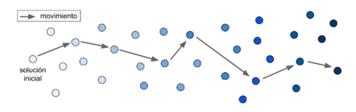
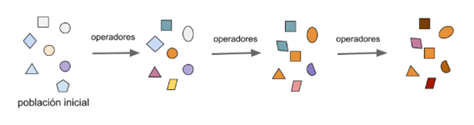
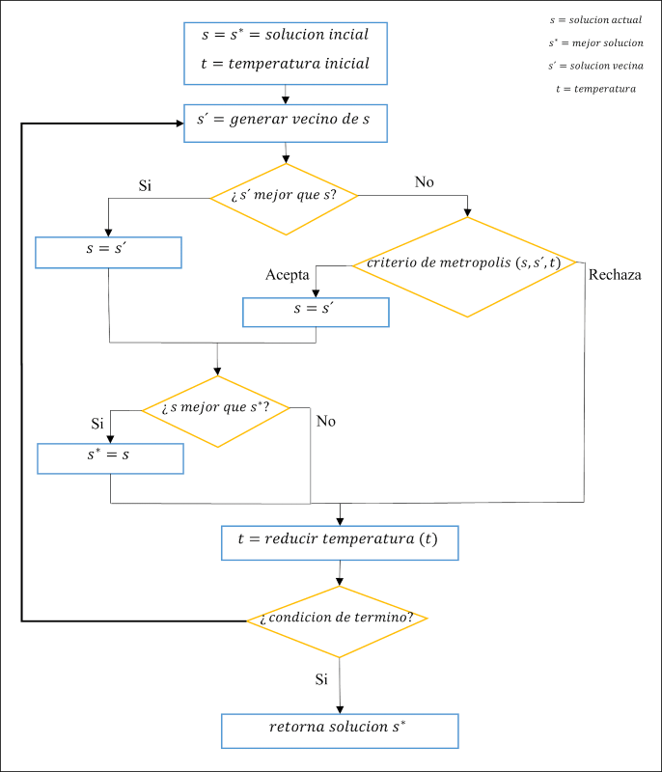
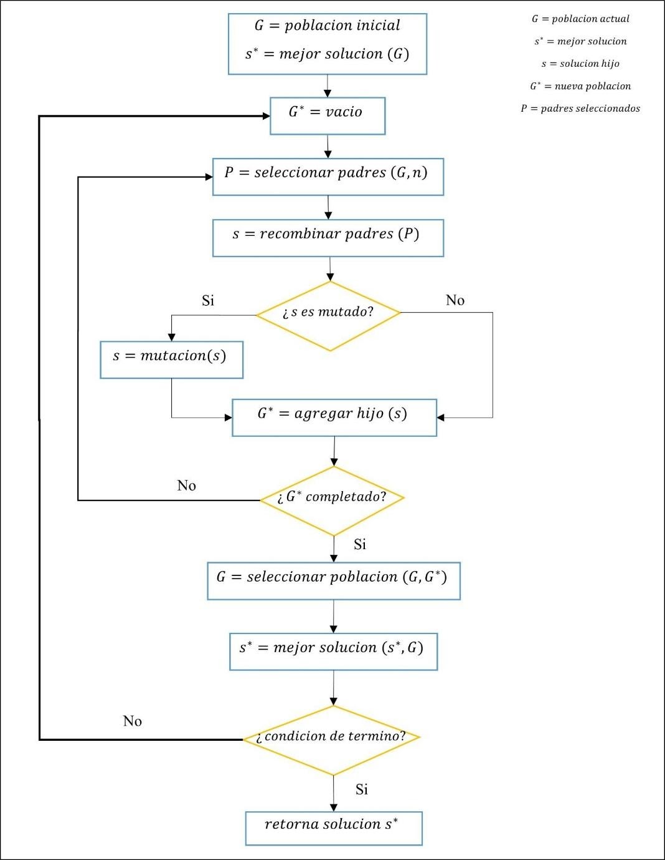

TSP Framework
Problema del Vendedor Viajero
El problema del vendedor viajero o TSP está enfocado en encontrar la ruta más corta en un entre un conjunto de ciudades que deben ser visitadas solo una vez. Al final de la ruta se debe volver a la ciudad por la que se partió. Todas estas ciudades deben ser visitadas por un vendedor el cual debe mantener los costos y/o las distancias viajadas lo más bajo posible, esto implica que es un problema de minimización.
Enfocado en la optimización, este problema se usa para encontrar la ruta más eficiente para viajar entre varios nodos. Fue descrito por primera vez por el matemático irlandés W.R. Hamilton y el matemático británico Thomas Kirkman en la década de 1800 a través de la creación de un juego que se podía resolver al encontrar un circuito de Hamilton, que es un camino compuesto por distintos nodos donde deben recorrerse todos sin superponerse, y el primer y último nodo deben estar conectados.
TSP se ha estudiado durante décadas y se han teorizado varias soluciones, siendo la más simple la de probar todas las posibilidades, pero también es la más lenta y costosa. Es por esto por lo que se utilizan metaheurísticas, pero estas entregan soluciones aproximadas y no siempre óptimas.
Para terminar de comprender el TSP de forma práctica, se tiene la siguiente figura, donde se tienen varios nodos representando los puntos que se deben recorrer los cuales están conectados entre sí con sus respectivas distancias.

Notemos que si se define una ruta 1: {A, B, C, D, E, A}, la distancia sería de 21, y si se define una ruta 2: {A, B, C, E, D, A}, la distancia sería de 35, por lo que la ruta 1 resulta mejor y sería una mejor solución para TSP.
Metaheurísticas
Con el fin de comprender el concepto de metaheurística, se debe entender el término de heurística. Conceptualmente, la heurística está relacionada con la capacidad de solucionar inteligentemente problemas reales usando el conocimiento disponible.
A nivel práctico, las heurísticas son técnicas de resolución de problemas, las cuales se conforman por reglas metodológicas con el fin de encontrar la solución que más se acerque al resultado óptimo de un problema en específico, manteniendo un costo de cómputo razonable.
Sin embargo, estos resultados no garantizan una solución que sea factible, por tanto, no se puede determinar qué tan próximo se encuentran a la solución óptima. Además, que la técnica desarrollada para solucionar el problema solo es válida para este, siendo necesario generar otros métodos que satisfagan diversos tipos de problemas.
Es en estos escenarios, que existe otra técnica de solución de problemas, las denominadas metaheurísticas, las cuales son estrategias generales para aplicar una o más heurísticas, y que permiten solucionar problemas de forma general, es decir, que una misma metaheurística tiene la capacidad de encontrar soluciones factibles a diferentes problemáticas. De allí el significado de su nombre, pues meta significa “más allá” o “nivel superior”, haciendo referencia de la capacidad de abarcar mayor número de problemas en contraparte de las heurísticas.
Para lograr esta característica de generalidad, las metaheurísticas generan soluciones usando el concepto de exploración y explotación del espacio de búsqueda, evitando así el estancamiento en los óptimos locales (en un área acotada del total de soluciones posibles).
Cuando se habla de exploración del espacio de búsqueda, se hace referencia a la indagación de soluciones en toda el área de búsqueda, permitiendo encontrar sectores prometedores de mejores soluciones. En el caso de la explotación, se enfoca en intensificar uno de estos sectores prometedores, buscando el óptimo local.
El enfoque del software se centra en el desarrollo de dos metaheurísticas con el fin de solucionar el problema del vendedor viajero, las cuales se basan en las estrategias de búsqueda trayectoria y poblacional.
- Trayectoria: método de búsqueda global, en donde se maneja una sola solución del espacio de búsqueda en cada iteración (solución actual), aplicando heurísticas perturbativas para encontrar la siguiente solución, generando una trayectoria de soluciones, un ejemplo de ello es el Simulated Annealing. 
- Poblacional: método de búsqueda global, en donde se analiza un conjunto de soluciones del espacio de búsqueda en cada iteración, las cuales son modificadas y refinadas en cada repetición del algoritmo, un ejemplo de ello es el Algoritmo Genético. 
Simulated Annealing
El concepto del Recocido Simulado (Simulated Annealing) fue introducido a inicios de los años 80 por Kirkpatric y Vecchi, el cual fue inspirado en el proceso físico de enfriamiento de metales con el fin de llegar al equilibrio térmico, durante este tratamiento se logra alterar las propiedades físicas de los materiales al calentarse a altas temperatura y luego enfriarlos de manera controlada.
La metaheurística es de tipo trayectoria, teniendo como característica evitar el estancamiento de soluciones a nivel local, esto se logra mediante la aplicación de un criterio de aceptación denominado criterio de metrópolis, el cual permite la aceptación de una solución no necesariamente mejor a la actual, aumentando de esta forma el espacio de búsqueda. Para aplicar Simulated Annealing es necesario definir un movimiento (heurística perturbativa) que permitirá generar soluciones a partir de otras.
Pseudocódigo
El procedimiento de ejecución del algoritmo se rige por las siguientes operaciones:
- El proceso comienza con la generación de una solución inicial, el cual será el punto de inicio y comparación con la siguiente solución generada.
- La solución actual, representada por la variable (s), al principio será la solución inicial, de igual forma conlleva la implicación que será la mejor solución encontrada (s*). Además, se define la variable temperatura, la cual idealmente tendrá un valor alto, simulando la temperatura máxima que alcanza un metal (t).
- En cada iteración, se realiza un movimiento aleatorio con el fin de encontrar un vecino de la solución actual, declarado como (s').
-
En este punto se pueden generar dos situaciones al comparar la solución actual y el
vecino generado:
- Si el nuevo vecino generado (s'), presenta un mejor valor en comparación a la solución actual (s), el vecino se convertirá en la nueva solución actual.
-
Si el vecino (s') no presenta un mejor valor respecto a la solución actual (s), se
aplica el criterio de metrópoli:
- Si se acepta el criterio, la solución actual será determinada por el vecino generado.
- Si se rechaza, se descarta el vecino generado.
- En caso de que la solución actual (s) tenga un valor óptimo al compararlo con la mejor solución (s*), el valor de este último será reemplazado por el primero.
- Al finalizar la iteración, la temperatura disminuirá dependiendo el esquema de enfriamiento seleccionado.
- En caso de cumplir el criterio de término del algoritmo, se retornará la mejor solución (s*), en caso contrario se repite el proceso a partir del paso 3.
Con el fin de facilitar la comprensión del algoritmo, se presenta un diagrama de flujo:
Algoritmos Genéticos
El algoritmo genético es una metaheurística de población, conceptualmente se basa en el principio de evolución de los seres vivos, planteado por Darwin en 1859. En este, se indica que los seres vivos tienen la necesidad de reproducirse, con el fin de generar descendencia, es en este punto en donde se genera una competencia entre los individuos de una misma especie, ya que un espécimen fuerte tiene una alta capacidad de sobrevivencia en comparación a sus pares, presentando una mayor probabilidad de generar descendientes. Esto implica que los genes de los mejores sujetos se propagarán en sucesivas generaciones, provocando de esta manera, mutaciones que originan la evolución en nuevas generaciones, teniendo esta mayor capacidad de sobrevivencia que sus antecesores. De igual forma que sus antecesores, las nuevas generaciones volverán a reproducirse y seguirán creándose evoluciones que permitan adaptarse al ambiente que habitan.
En 1975 John Holland crea los principios básicos del algoritmo genético, el cual es una analogía directa al principio de evolución de Darwin, en donde las soluciones encontradas en el problema del vendedor viajero son individuos. Ya que esta metaheurística es de tipo poblacional, la forma de evaluar cada iteración (generación) es a partir de un conjunto de soluciones, el cual es llamando población. En cada generación, se realizan cruzamientos entre padres para generar nuevos hijos, además de aplicar un factor de mutación que permite explorar el espacio de búsqueda. Por último, se seleccionan los mejores hijos y/o padres para generar una nueva población.
Pseudocódigo
Con el fin de realizar el proceso de selección de la mejor solución con algoritmo genético, se necesitan llevar a cabo los siguientes pasos:
- Se inicia el algoritmo generando una población inicial, la cual también será nuestra población actual (G), para ello se debe determinar la cantidad de soluciones que conforman la población. Cada solución es creada a partir de los mismos métodos de generación de solución inicial de Simulated Annealing: aleatoria, vecino más cercano o determinista.
- La mejor solución encontrada (s*), en un comienzo estará determinada por la mejor solución dentro de la población inicial.
- Al iniciar una iteración o generación se seleccionan dos o más padres (P) de la población.
- Los padres escogidos crearán nuevos hijos (s), para ello pasan por un proceso llamado recombinación, en donde los padres combinan los componentes de sus cromosomas (posición de las ciudades).
- Una vez generado los hijos, estos pasan por una pequeña modificación generando una solución alterada, este procedimiento es llamado mutación. La probabilidad de que ocurra esta mutación es pequeña, existen varios tipos de mutación de solución.
- En este punto, si la cantidad de hijos generados no son suficientes para construir una nueva población (G*), se vuelve al paso 3 volviendo a generar otros hijos adicionales.
- Ya creada la nueva población (G*), esta se compara con la población actual (G), en donde los individuos de ambas poblaciones son elegidos para sustituir la generación actual con el fin de pertenecer a la próxima iteración del algoritmo.
- Se selecciona el mejor hijo (solución) dentro de la nueva población actual, y se compara con la mejor solución encontrada (s*), en caso de ser mejor la solución generada, esta pasa a ser la mejor solución encontrada.
- En caso de cumplir el criterio de término, se retorna la mejor solución encontrada. De manera contraria, se vuelve a ejecutar el procedimiento desde el paso 3.
Para facilitar el proceso de compresión del algoritmo, se ha diseñado un diagrama de flujo, que muestra gráficamente la ejecución de este:
